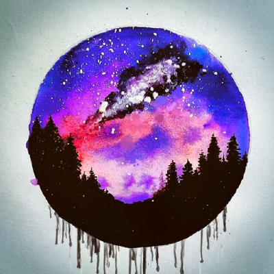
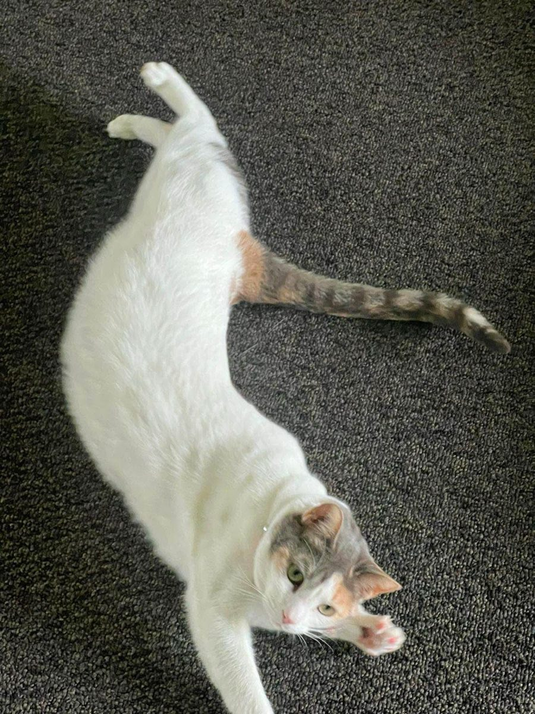
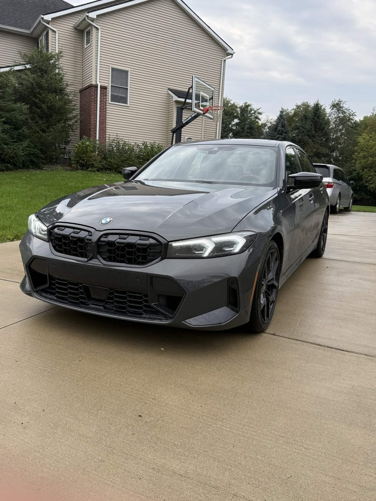

Hi, I'm
Venkat Yenduri
Computer Science grad student at Wayne State University and a Software Engineer I at DTE Energy in Detroit, Michigan.
About me
I finished my B.S. in Computer Science at Wayne State in May 2025 and stayed on for a M.S. in Computer Science, which I expect to finish in December 2026. I like building useful software, from apps and automation tools to the cloud systems they run on.
As a Software Engineer I at DTE Energy, I'm leading a migration of configuration management across 3,000+ Linux and Windows servers to an open source platform. I also built a retrieval-augmented generation (RAG) chatbot on Azure that answers questions about benchmark data in under six seconds. Before that I interned at United Wholesale Mortgage and CommunityConnect.
Classes I'm taking this semester
Details, past courses, and projects are on my course page.
Experience
| Role | Company | Location | Dates |
|---|---|---|---|
| Software Engineer I | DTE Energy | Detroit, MI | June 2025 – Present |
| Data Science Intern | United Wholesale Mortgage | Pontiac, MI | May 2024 – Aug. 2024 |
| Software Engineer Intern | CommunityConnect | Pontiac, MI | Jan. 2024 – Apr. 2024 |
3 favorite TV shows
- Severance: office workers whose work memories are separated from their personal lives.
- Widow's Bay: a mayor and the superstitious people of a cursed island town.
- Lanterns: two Green Lanterns solve a murder mystery on Earth.
Outside of school and work


Technical skills
- Languages
- Python, C, C#, C++, Swift, Java, SQL, HTML/CSS, TypeScript, JavaScript
- Frameworks
- TensorFlow, CoreML, Node.js, .NET, React, Next.js, PyTorch, MERN
- Tools
- AWS, Azure, Google Cloud, Git, Docker, Kubernetes, Ansible, Puppet, MongoDB, Tableau